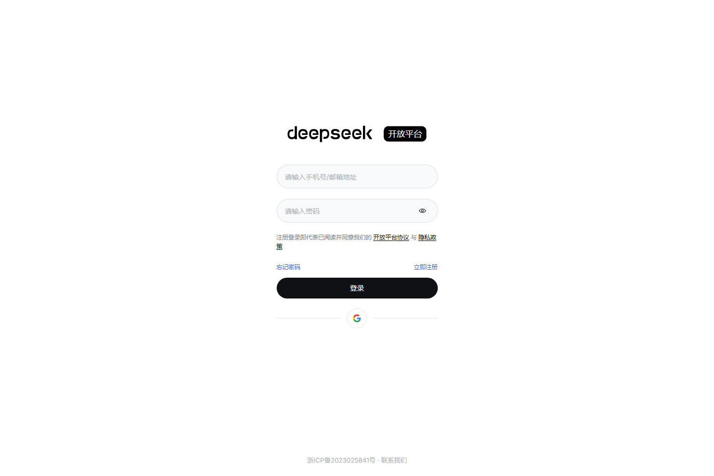
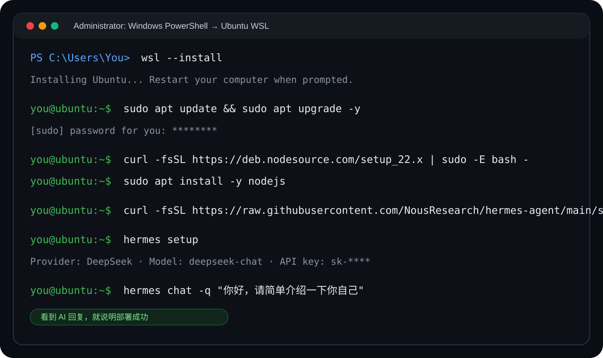
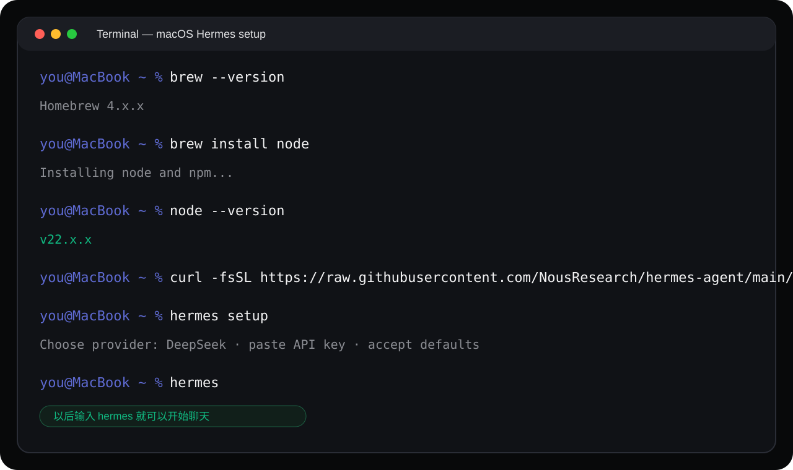

从零部署 Hermes Agent，让同事真正用起来
这是一份给零基础同事看的图文教程：不要求懂命令行，不要求懂 Linux，只要能复制粘贴，就能在 Windows 或 macOS 上跑起 Hermes，并用 DeepSeek 作为便宜好用的中文模型。
先认识 Hermes
它是什么
Hermes 是一个运行在你电脑里的 AI 助手，可以读文件、执行命令、帮你完成工作流，而不是只能在网页聊天。
能干什么
写周报 HTML、分析 Excel、整理文档、协助部署项目、把重复操作变成自动化流程。
为什么 DeepSeek
中文友好、注册简单、价格便宜。日常学习和办公测试，10 元通常能用很久。
准备工作：DeepSeek 和终端
注册 DeepSeek 并拿到 API Key
- 打开浏览器访问
platform.deepseek.com。 - 点击右上角注册，用手机号或邮箱登录。
- 进入左侧菜单 API Keys。
- 点击创建 API Key，名字可以写“我的电脑”。
- 复制
sk-xxxxxxxx，保存到记事本，不要发给别人。
充值 10 元即可开始
DeepSeek 余额不足时，Hermes 会停止响应。建议先充 10 元，再开启自动充值或余额提醒。

终端是什么
终端就是一个用文字命令控制电脑的窗口。你不需要记命令，只需要把本教程里的命令完整复制进去，按回车。
选择你的系统开始部署

确认电脑能装 WSL2
推荐 Windows 11，或 Windows 10 2004 以上版本。公司电脑如果弹出权限拦截，先联系 IT 开启“虚拟化”和“适用于 Linux 的 Windows 子系统”。
以管理员身份打开 PowerShell
右键开始菜单，选择 Terminal（管理员） 或 Windows PowerShell（管理员）。窗口标题里看到“管理员”再继续。
安装 WSL2 和 Ubuntu
wsl --install -d Ubuntu
如果系统提示重启，就先重启电脑。重启后如果没有自动弹出 Ubuntu，在开始菜单搜索 Ubuntu 手动打开。
完成 Ubuntu 第一次初始化
第一次打开 Ubuntu 会停在黑色窗口里安装几分钟。看到 Enter new UNIX username 时，输入一个英文用户名；随后输入密码并确认一次。
确认 Ubuntu 正在用 WSL2
回到 PowerShell，运行：
wsl -l -v
看到 Ubuntu 这一行的 VERSION 是 2 就可以继续。如果是 1，执行：
wsl --set-version Ubuntu 2
在 Ubuntu 里更新系统包
sudo apt update && sudo apt upgrade -y
sudo 会要求输入刚才设置的 Ubuntu 密码。这里同样不会显示字符，输入完直接回车。
安装 Node.js 22
curl -fsSL https://deb.nodesource.com/setup_22.x | sudo -E bash - sudo apt install -y nodejs node --version
看到类似 v22.x.x 就说明成功。
安装 Hermes Agent
curl -fsSL https://raw.githubusercontent.com/NousResearch/hermes-agent/main/scripts/install.sh | bash
安装完关闭 Ubuntu 窗口，重新打开，再运行：
hermes --version
配置 DeepSeek
hermes setup
选择 DeepSeek，粘贴 API Key，模型推荐 deepseek-chat，其余选项直接回车使用默认。

打开终端
按 Cmd + 空格 搜索“终端”或 Terminal，回车打开。
检查或安装 Homebrew
brew --version
如果显示 command not found，再执行：
/bin/bash -c "$(curl -fsSL https://raw.githubusercontent.com/Homebrew/install/HEAD/install.sh)"
安装 Node.js
brew install node node --version
看到类似 v22.x.x 就说明成功。
安装 Hermes Agent
curl -fsSL https://raw.githubusercontent.com/NousResearch/hermes-agent/main/scripts/install.sh | bash
安装完成后关闭终端重新打开，再检查：
hermes --version
配置 DeepSeek
hermes setup
选择 DeepSeek，粘贴 API Key，模型推荐 deepseek-chat。
测试是否成功
运行这条命令
hermes chat -q "你好，请简单介绍一下你自己"
hermes 回车即可进入对话模式。常见问题
Q: wsl --install 报错怎么办？
确认 Windows 版本是 Windows 10 2004+ 或 Windows 11，并在 BIOS 中开启虚拟化。如果电脑太旧，先升级系统。
Q: hermes: command not found？
关闭终端重新打开。如果还不行，执行 source ~/.bashrc 或 source ~/.zshrc。
Q: 粘贴 API Key 后终端没有显示，是不是没粘上？
通常不是。Hermes 输入 API Key 时会隐藏内容，不显示字符、星号或圆点。粘贴一次后直接回车即可，不要反复粘贴。
Q: API Key 配在哪里？
通常在 ~/.hermes/.env 文件里，也可以重新运行 hermes setup。
Q: 怎么换模型？
输入 hermes model，或在聊天中输入 /model。
Q: DeepSeek 花多少钱？
日常办公和学习很便宜。10 元通常足够试用很长时间，具体取决于每天对话量。
Q: WSL 和 Windows 文件怎么互通？
WSL 里访问 Windows 文件：/mnt/c/ 是 C 盘。Windows 里访问 WSL 文件：文件管理器地址栏输入 \\wsl$\Ubuntu。